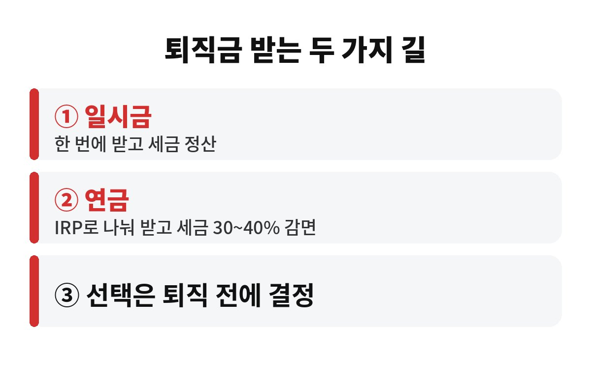
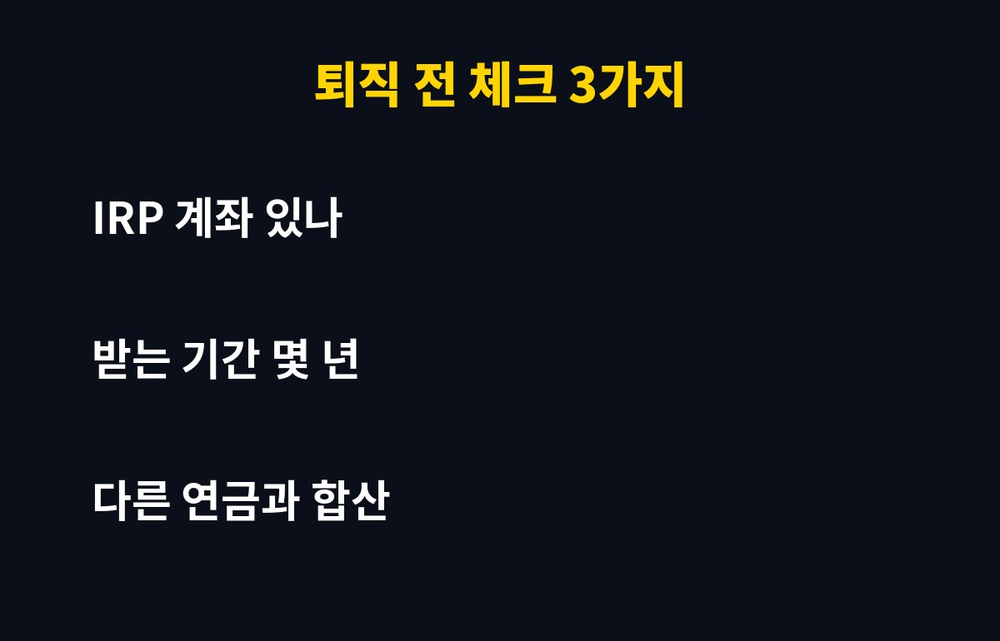

퇴직금 연금 수령은 일시금보다 퇴직소득세를 30~40% 덜 내는 구조라서, 받는 방법만 바꿔도 세금이 확 달라질 수 있습니다. 퇴직을 앞둔 직장인이라면 "그냥 통장으로 한 번에 받으면 되지"라고 넘기다 후회할 수 있는데, 도대체 무엇이 다를까요?
퇴직금은 평생 한 번 크게 만지는 목돈이라, 받는 방식 하나가 수백만 원 차이를 만들기도 합니다. 오늘은 어려운 용어 빼고 핵심만 짚어볼게요.
퇴직금을 일시금으로 받으면 그 해에 퇴직소득세를 한 번에 정산합니다. 반대로 IRP(개인형 퇴직연금) 계좌로 받아서 연금 형태로 나눠 찾으면, 세법이 "오래 묵혀서 천천히 쓰는 돈"으로 보고 퇴직소득세를 깎아줘요.
감면 폭은 연금을 받는 기간에 따라 달라집니다. 연금 수령 10년 이하 구간은 약 30%, 10년을 넘기면 약 40%까지 감면되는 구조입니다. 오래 나눠 받을수록 유리하다는 뜻이죠. 실제 적용은 수령 연차와 개인 상황에 따라 달라지니, 퇴직 전에 금융회사나 세무 전문가에게 한 번 더 확인하시는 게 안전합니다.
| 구분 | 일시금 | 연금 수령 |
| 받는 방식 | 퇴직 때 한 번에 | IRP에서 나눠서 |
| 퇴직소득세 | 정산해서 납부 | 약 30~40% 감면 |
| 돈 쓰는 자유도 | 높음 | 정해진 한도 안에서 |
| 운용 | 바로 내 통장 | IRP에서 계속 굴림 |
일시금은 자유롭지만 세금 혜택이 없고, 연금은 묶이는 대신 세금이 줄어듭니다. 결국 "당장 필요한 돈이냐, 노후에 쓸 돈이냐"가 갈림길이에요.
있습니다. 다음 경우는 한 번 더 따져보세요.
첫째, 퇴직 직후 큰돈이 꼭 필요한 분입니다. 대출 상환이나 전세금 보증금처럼 목돈이 급하면 연금으로 묶는 게 오히려 발목을 잡을 수 있어요. 연금 형태로 찾지 않고 중간에 해지하면 감면받은 세금을 다시 내야 할 수 있습니다.
둘째, 이미 다른 연금 소득이 많은 분입니다. 국민연금, 개인연금 등과 합쳐지면 연간 수령액이 커져서 세금 계산이 복잡해집니다. 연금 소득이 일정 한도를 넘으면 종합과세 대상이 될 수도 있어요.
셋째, 연금 수령 기간을 짧게 잡는 분입니다. 감면율은 오래 받을수록 커지는 구조라서, 짧게 끝내면 40% 구간의 혜택을 못 누립니다.
1) IRP 계좌가 있는지. 퇴직금을 연금으로 받으려면 IRP 계좌가 있어야 합니다. 퇴직 당일에 급하게 만들려면 서류 때문에 당황하기 쉬우니, 미리 한 곳 열어두세요.
2) 몇 년에 걸쳐 받을지. 앞서 말했듯 10년을 넘기느냐에 따라 감면율이 달라집니다. 내 나이와 생활비를 놓고 현실적인 기간을 잡아보세요.
3) 회사 퇴직 제도가 뭔지. 퇴직금(확정급여형), 퇴직연금(DC형) 등 제도마다 처리 방식이 조금씩 달라요. 인사팀에 "퇴직금을 IRP로 받는 절차가 어떻게 되냐"고 물어보는 게 제일 빠릅니다.
정리하면 이렇습니다. 당장 쓸 돈이 아니라면 연금으로 받는 쪽이 세금 면에서 대체로 유리하고, 당장 목돈이 필요하다면 일시금과 연금을 나눠 받는 방법도 고민해볼 만합니다. 한 번 정하면 되돌리기 어려운 선택이니, 퇴직 한두 달 전에는 꼭 결정을 끝내두세요.
혹시 곧 퇴직을 앞두고 계신가요? 일시금과 연금 중 어느 쪽으로 마음이 기우시는지 댓글로 남겨주세요. 도움이 됐다면 구독도 눌러주시면 다음 글에서 또 챙겨드릴게요.


※ 본 글은 정보 제공 목적이며 투자 권유가 아닙니다. 세법과 개인 상황에 따라 다를 수 있으니 전문가와 상담하세요.